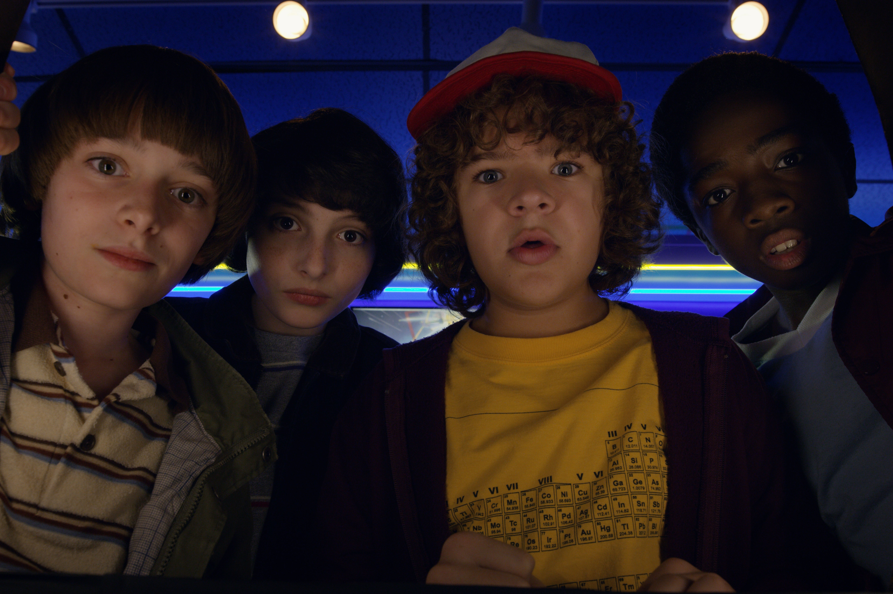
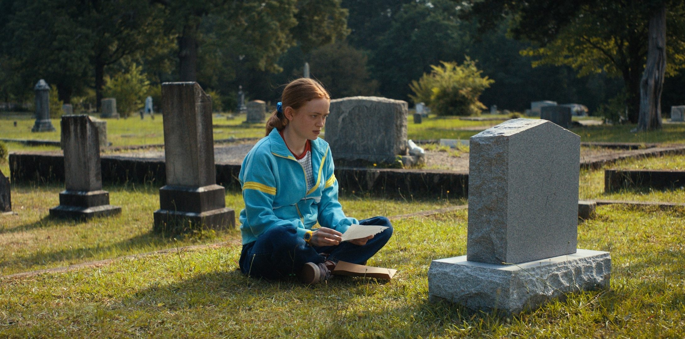
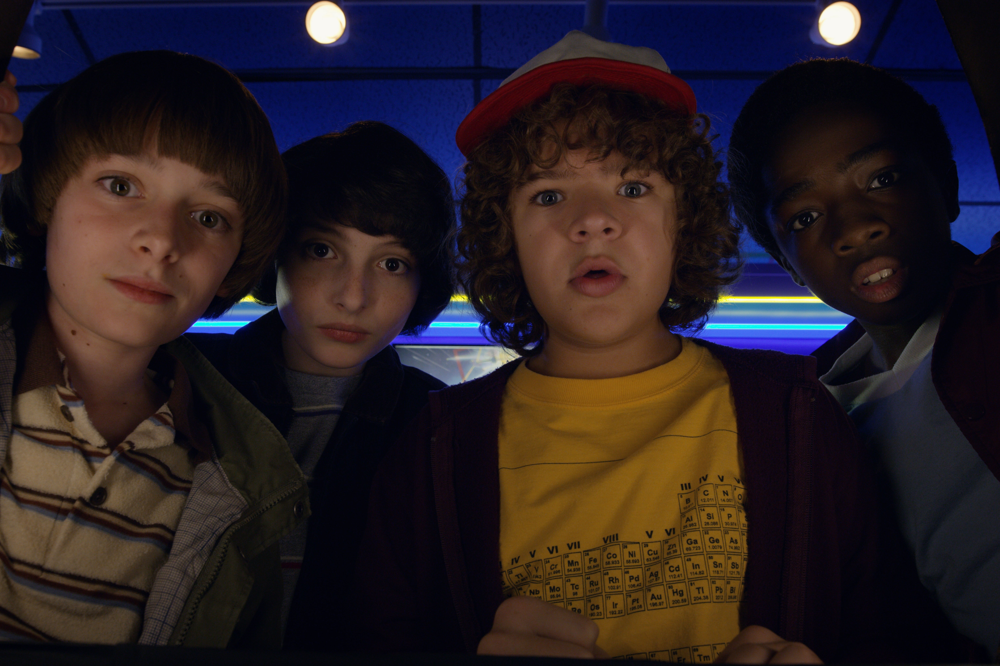
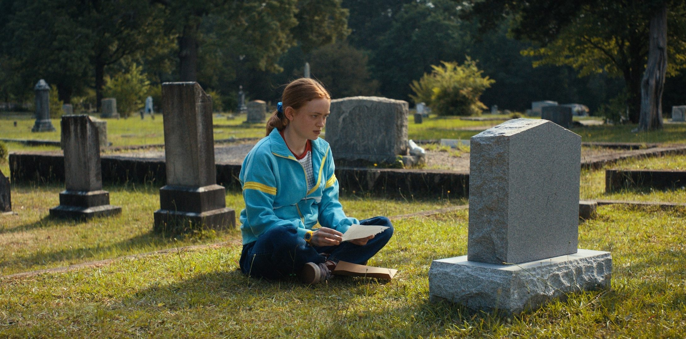
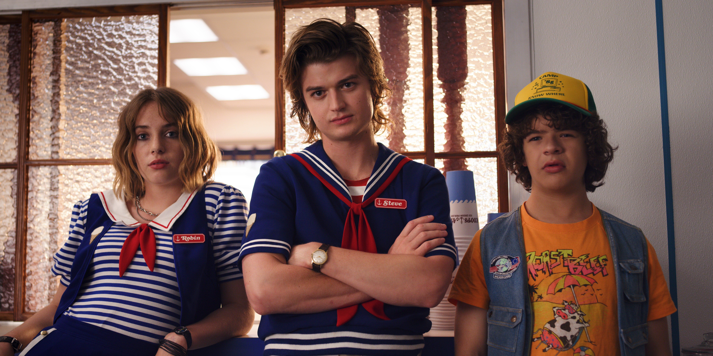
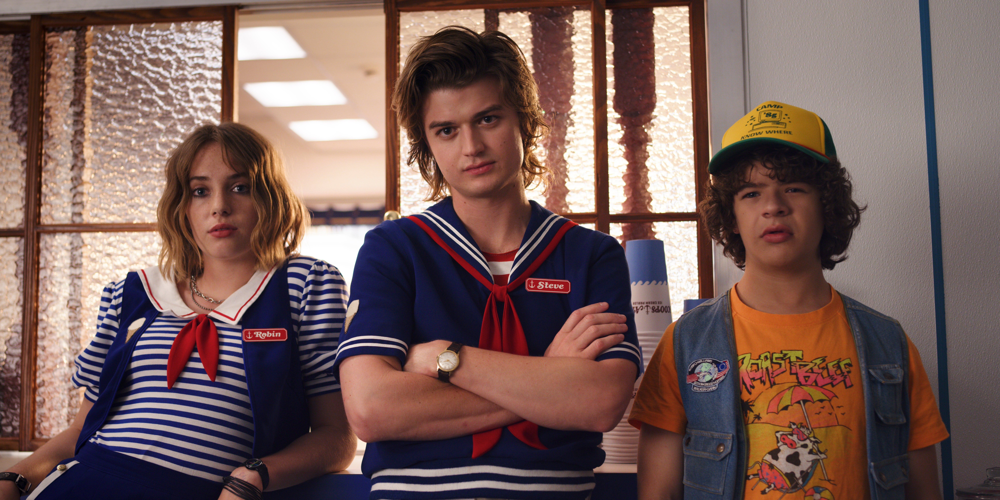

 

Stranger Things é uma série sobrenatural de ficção científica criada pelos irmãos Duffer para a Netflix. Situada na cidade ficcional de Hawkins, Indiana, a trama começa no ano de 1983 com o desaparecimento do garoto Will. A investigação sobre as estranhas circunstâncias envolvendo seu sumiço leva um grupo de pré-adolescentes a conhecer uma garota com poderes de telecinese e a descobrir uma passagem para um Mundo Invertido